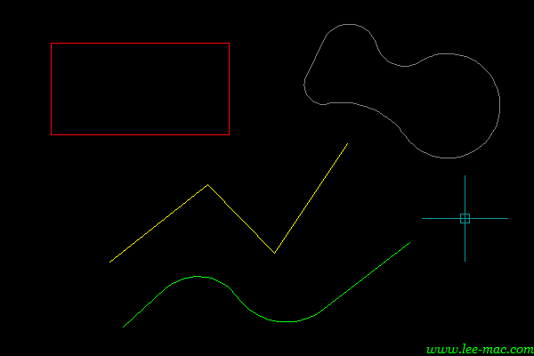

Polyline Taper
This page is delivered for consistency purposes only, as part of the LeeMac sample module of DynALisp, which shows how DynALisp turns existing AutoLISP programs into a module. The program and its description are the work of Lee Mac, who keeps all the credit for them. The original page, with the latest version, is on Lee Mac's website: https://lee-mac.com/polytaper.html
| Function Syntax | LM-PolylineTaper – original syntax: ptaper (see aliases) |
| Current Version | 1.1 |
| Compatible with AutoCAD for Mac? | Yes |
| Compatible with AutoCAD LT? | Yes |
| Original Page | lee-mac.com/polytaper.html |
Program Description
This program allows the user to apply a tapered width across all vertices of a selected polyline or multiple polylines in a selection.
Upon issuing the command syntax ptaper at the AutoCAD command-line, the user may specify a starting width and an ending width for the taper. At these prompts, the last entered value in the current drawing session will be offered as a default option which may be selected by pressing ENTER at the prompt.
The program will then continuously prompt the user to select a 2D polyline (LWPolyline) to which to apply the taper. Following a valid selection, the program will modify the selected polyline such that the polyline segment width at the first vertex is equal to the specified starting width, and the segment width at the final vertex is equal to the specified ending width, with the segment width increasing uniformly along all vertices of the polyline.
At this prompt, the program also offers the user a Multiple option, which, when activated, will allow the user to select multiple 2D polylines using any standard selection method (window, crossing, polygon, fence, group etc.) and, following a valid selection, will proceed to apply the taper simultaneously to all polylines in the selection.
The user may exit the program by pressing ENTER, typing X, or right-clicking at the selection prompt.
The taper direction may be reversed by either reversing the relevant polyline prior to using this program (using the Reverse option of the PEDIT command, for example), or by specifying the taper widths in reverse order.
The program is compatible with 2D polylines containing linear segments and/or arc segments, constructed in any UCS.
Demonstration

Bundled program notes
;;-------------------------=={ Polyline Taper }==-----------------------;;
;; ;;
;; This program allows the user to apply a tapered width across all ;;
;; vertices of a selected polyline or all polylines in a selection. ;;
;; ;;
;; Upon issuing the command syntax 'ptaper' at the AutoCAD ;;
;; command-line the user may specify a starting width and an ending ;;
;; width, with the width increasing uniformly along all vertices of ;;
;; the selected polyline. ;;
;; ;;
;; The program is compatible with 2D polylines containing linear ;;
;; segments and/or arc segments, constructed in any UCS. ;;
;;----------------------------------------------------------------------;;
;; Author: Lee Mac, Copyright © 2016 - www.lee-mac.com ;;
;;----------------------------------------------------------------------;;
;; Version 1.0 - 2016-01-01 ;;
;; ;;
;; - First release. ;;
;;----------------------------------------------------------------------;;
;; Version 1.1 - 2018-03-11 ;;
;; ;;
;; - Restructured program to perform taper operation using a separate ;;
;; function, allowing an option for multiple selection to be added. ;;
;;----------------------------------------------------------------------;;
Command Names And Aliases
As in every DynALisp module, each program of this sample module has one main command, named LM-*, and the original command names of Lee Mac's page are kept as its aliases: they run the same command, and can be added, renamed or removed in Dyl-Suite (saved in Resources\Aliases.csv).
| Command | Aliases | Name |
|---|---|---|
| LM-PolylineTaper | PTAPER | Polyline Taper |